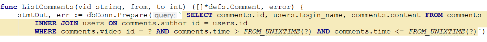
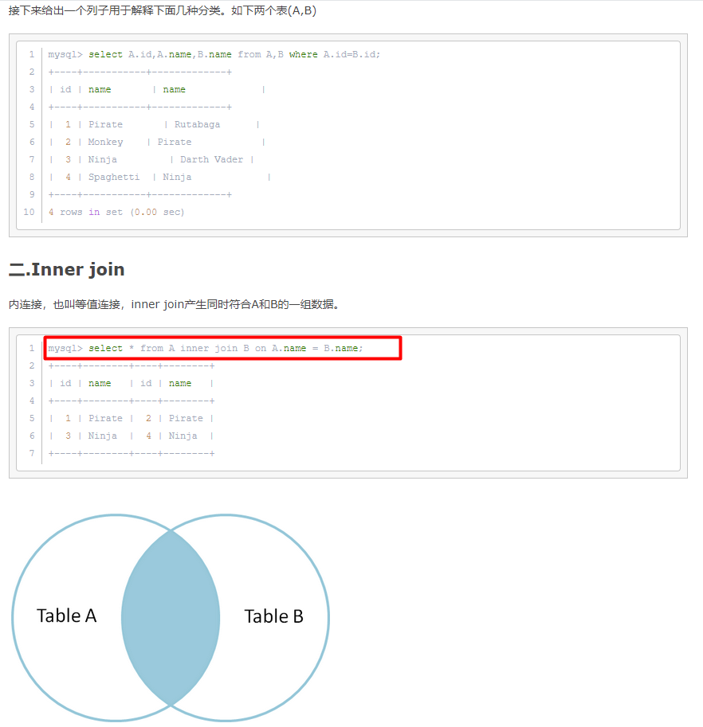
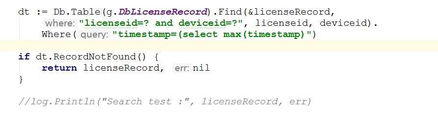
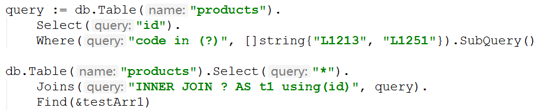

mysql操作
mysql操作是不区分大小写的。
Mysql安装后若出现问题
ERROR 2002 (HY000): Can’t connect to local MySQL server through socket ‘/var/run/mysqld/mysqld.sock’ (2)
解决方式：
touch /var/run/mysqld/mysqld.sock
ls -lart /var/run/mysqld/
chown -R mysql /var/run/mysqld
ls -lart /var/run/mysqld/
mysql restart
/etc/init.d/mysql restart
基础操作
1 添加表字段
1 | alter table table1 add transactor varchar(10) not Null; |
2 如果要删除某一字段
1 | ALTER TABLE mytable DROP 字段名; |
3 修改数据表字段的默认值：
修改字段默认值：role_id默认值设置为：1
1 | mysql> alter table users_info alter column role_id set default 1; |
修改字段默认值语法：
alter table 表名 alter column 字段名 drop default; (若本身存在默认值，则先删除)
alter table 表名 alter column 字段名 set default 默认值;(若本身不存在则可以直接设定)
预处理
JOIN
使用Join， Inner join取得两表间类似的数据，链接


mysql隐式转换
mysql隐式转换，会造成SQL慢查询，因为SQL转化后，即使使用索引查询，SQL也不会认为其是索引。
也就是说，若字段为字符串数字，则需要使用字符串类型作为where查询条件去查询数据，若使用整型数据，则会发生隐式转换，这相当于在字段前加上了to_int(xxx)，类似于：where to_int(xxx) = xxx，在字段前加函数，其将无法使用索引，这是条准则。
日期索引
1 | 在查询数据条数约占总条数五分之一以下时能够使用到索引，但超过五分之一时，则使用全表扫描了。 |
查询缓存
1 | mysql> SHOW VARIABLES LIKE '%query_cache%'; |
mysql调试
慢查询可以将mysql执行慢的语句记录下来。
http://www.cnblogs.com/luyucheng/p/6265594.html
慢查询使用pt-query-digest进行分析：
安装过程：
1 | [root@localhost ~]# wget percona.com/get/pt-query-digest |
开启慢查询后，会有慢查询的日志，对日志使用工具：
1 | pt-query-digest --explain h=127.0.0.1,u=root,p=123 mysql_slow.log > pt.ref |
开启实时查询，能够得到每一次SQL语句的完整执行语句。
mysql插入CSV文件
1 | LOAD DATA LOCAL INFILE './dbtestdata.csv' INTO TABLE production_recorder.6 CHARACTER SET UTF8 FIELDS TERMINATED BY ',' LINES TERMINATED BY '\n'; |
GORM使用
查找最大值

时间戳跟踪
Gorm里面有个结构体：
1 | // gorm.Model definition |
这四个参数是Gorm固定的参数，例如，如果结构体中有“ID”成员，那么建表时它就是表中的主键。
CreatedAt：也就是插入值时默认添加的时间戳；
UpdatedAt：更新时添加的时间戳；
DeletedAt：被删除时添加的时间戳。（有一个软删除的概念）
GORM默认是使用蛇形命名，也就是CreatedAt成员将被命名为“created_at”。
select * from production_recorder.6 WHERE errcode like “86:54:37%” LIMIT 1000000,10;
子查询
https://stackoverflow.com/questions/46807891/using-a-subquery-in-from-in-gorm?rq=1


从手册上摘出来的子查询使用方法：
1 | db.Where("amount > ?", DB.Table("orders").Select("AVG(amount)").Where("state = ?", "paid").QueryExpr()).Find(&orders) |
打印Gorm执行语句（包含时间）
将执行的语句打印出来。
1 | // Debug a single operation, show detailed log for this operation |
gorm拼接SQL语句
1 | dt = dt.Table(models.TableRecords) |
Gorm的官方文档其实已经比较详细了，想跟深入的了解，可以直接去看官方文档：
本文标题：mysql操作
文章作者：小师
发布时间：2018-09-14
最后更新：2022-05-04
原始链接：chunlife.top/2018/09/14/mysql操作-不定时持续补充/
版权声明：本站所有文章均采用知识共享署名4.0国际许可协议进行许可